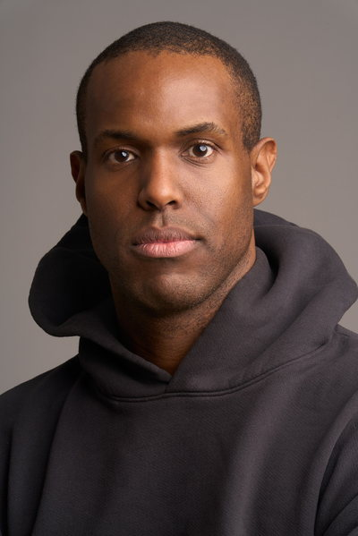
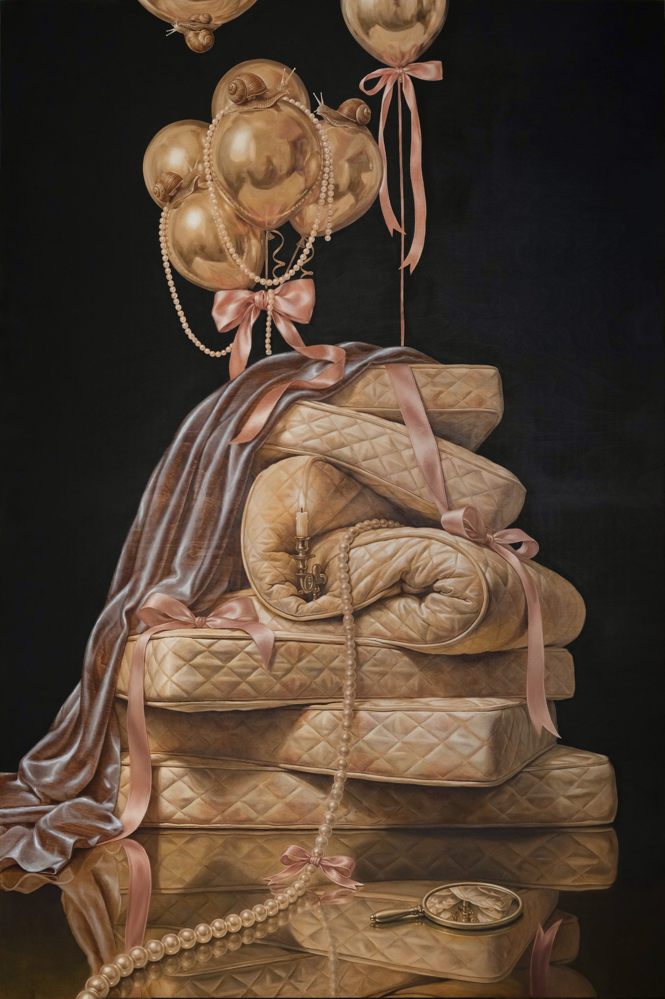

Research Engineer, Google DeepMindArtist
I am a researcher currently at Google DeepMind, based in New York.
I am an artist.
My research focuses on post-training, reinforcement learning and inference-time search for reasoning models, with applications in mathematics, programming, and computational science. My paintings and sculptures draw on Dutch Golden Age image-making traditions to examine how beauty and taste shape intimacy, authority, and belonging.
I was born in Kingston, Jamaica, and studied mathematics at Yale, where I also trained at the Yale School of Art. I completed my Ph.D. at Harvard while working in quantitative finance, where I subsequently spent roughly a decade before joining DeepMind. Throughout, painting remained a continuous part of that life.
At DeepMind, my work spans post-training, representation learning, and verification-guided reasoning. Some of my earlier work approached automated research through structured search: candidate programs were executed, scored by task-specific evaluators, and revised in light of the results. These were black-box optimization problems, often with verifiable rewards but sparse feedback and no gradient through program execution. The challenge was to preserve useful variation, balance exploration against exploitation, and allocate computation to the most promising branches of the search.
My recent work examines how reinforcement learning can improve performance while preserving a model’s range of useful responses. In Using Reward Uncertainty to Induce Diverse Behaviour in Reinforcement Learning, we treat uncertainty about the reward function as a reason to retain alternatives. Our framework optimizes a nonlinear objective over sets of responses under a distribution of possible reward functions. One formulation scores each set by its strongest response under each sampled reward function, encouraging useful alternatives when the objectives disagree. In mathematical reasoning tasks, this approach preserved a broader range of response lengths at comparable overall accuracy and improved robustness when training relied on an ensemble of unreliable judges.
I have also worked on a system for automated scientific software development, pairing a language model with tree-search to generate, test, and improve candidate programs. Extensions incorporate ideas proposed by research agents, connecting automated literature review and hypothesis generation with empirical testing. In single-cell RNA sequencing, it produced numerous methods that outperformed the leading human-developed methods on an external public benchmark. In epidemiological forecasting, many of our models outperformed the CDC-coordinated hospitalization ensemble over the study’s three-week evaluation period. The work appeared in Nature in 2026.
In other recent work, I have studied semantic variability at inference time. Additional samples offer diminishing returns when they repeat the same underlying approach. My work uses determinantal point processes to select sets of semantically complementary candidates, improving the probability of finding a correct solution within a fixed sampling budget. Other research has concerned continuous latent-space reasoning.
My career in quantitative hedge funds began at AQR and Ellington Management Group. I developed systematic macro and equity strategies and the simulation infrastructure used to research and operate them. During my time at Ellington, our small team grew from managing $5 million in internal capital to more than $1 billion in external assets. A collection of investment strategies I worked on achieved a realized Sharpe ratio of 1.8 over several years, operating at tens of millions in annualized risk.
At BlackRock, I became Director and Global Head of Mid-Horizon Research within the $10 billion Fixed Income Global Alpha platform. I led cross-asset systematic research and built the research platform used by teams in San Francisco and London.
After BlackRock, I founded a systematic investment firm built around a data-science platform that used LLVM for just-in-time Python compilation. The platform was central to the firm’s acquisition by Marto Capital in 2017. At Marto, I led statistical-learning research for strategies trading over horizons of minutes and built their distributed backtesting system, reducing the runtime of an intraday simulation from ten hours to under fifteen minutes. That change made a substantially wider range of experiments practical.
I completed my Ph.D. at Harvard while working full time at Ellington. My dissertation focused on how information enters financial prices when attention is limited, evidence is noisy, and knowledge circulates unevenly through social networks. It examined markets as imperfect learning systems, shaped by what investors notice, whom they encounter, and how much confidence they place in new evidence.
One essay showed how a stock can become effectively “forgotten” when it represents only a small position for each of its largest owners, leaving its price slow to reflect even salient earnings news. A second, coauthored with Alexander Chernyakov, traced the social ties linking fund managers and corporate executives, finding that informal contact influenced trading and the circulation of managers’ best ideas. A third developed a Bayesian model in which errors about the precision of incoming evidence produce short-run momentum followed by long-run reversal. Together, the essays described price formation as a process of distributed learning, in which partial knowledge and imperfect judgment can produce persistent patterns in aggregate behavior.
During my early academic work, I provided research assistance to Jean Tirole, the 2014 Nobel laureate in economics, and E. Glen Weyl on Market Power Screens Willingness-to-Pay. The project examined how observable market behavior can reveal otherwise hidden information about willingness to pay and the social value of innovation.
At Yale, I earned B.S. and M.S. degrees in mathematics. My thesis concerned fast decoding algorithms for partitioned superposition codes, which represent information through sparse combinations of vectors drawn from a structured dictionary. The underlying problem is how to recover individual signals from a shared representation. It has a conceptual parallel in research on feature superposition in neural networks, where many features can occupy the same representational dimensions.
My studio practice centers on oil painting on wood panel and extends into sculpture. I draw on Mannerist and Dutch Golden Age image-making, Jamaican and diasporic histories, and contemporary image culture.

I reference Mannerism for the instability within its elegance: elongated bodies, unsettled space, and a virtuosity that can register anxiety. Dutch still life places abundance beside spoilage, appetite beside restraint, and exquisite manufacture beside mortality. In both traditions, the pleasures of the surface carry an awareness of their own fragility. The objects pictured also help establish the terms by which wealth becomes desirable and authoritative.
My Jamaican and diasporic background informs how I approach these inherited forms. European pictorial conventions traveled through commerce, empire, religion, and class, acquiring different meanings far from their origins. I am attentive to what those forms authorize, whom they flatter, and what they leave outside the frame. That history enters the work through the use and rearrangement of images as much as through their subject matter.
The paintings often concern the conditions of belonging. I am interested in what follows admission to a social world: learning its etiquette, acquiring its fluencies, and becoming conscious of how one is seen. Access can bring pleasure and possibility while also asking for restraint or self-revision. The desire to belong is real, as is the accommodation it can require.
The paintings begin in attraction: the gleam of silver, the depth of a glaze, the light held in a pearl. That attraction is essential to the work. Unease emerges through the arrangement: a constriction, an improbable body, an object displaced from its customary setting. A painting can remain inviting while the relationships within it become less secure.
Figures often begin with people from my own life, refracted through historical conventions of portraiture and display. Around them is a recurring company of objects: pearls, snails, beds, ribbons, shells, brass instruments, and silver vessels. Pearls can adorn or constrict. A mattress can suggest rest, intimacy, exposure, or aftermath. The snail brings appetite and duration into a polished interior, its ordered shell carried by a soft, vulnerable body. It crosses the composition without observing its etiquette.
Reflection complicates these arrangements. Silver, lacquer, glass, and polished wood can widen pictorial space or disclose something unavailable to direct sight. They also make the act of looking part of the subject. In paintings concerned with self-presentation, reflection gives form to the divided experience of inhabiting a scene while imagining how one appears within it.
The works combine handwork with contemporary precision fabrication. Panels may be carved, shaped, and inlaid with brass, marble, or contrasting woods before being painted and finished by hand. In some pieces, wood is set into metal, reversing the customary relation between support and ornament.
Alongside the studio work, I write essays on painting, connoisseurship, material technique, contemporary culture, and the economic and social life of images and objects. Their subjects range from pentimenti and pigment behavior to pearls, snails, memes, criticism, and the art market. I value the different freedoms of writing and painting: an essay can develop a claim and follow its implications; a painting can sustain meanings that remain unresolved.
Painting and science ask different things of me. In both, though, the work has a way of changing my mind. A painting can unsettle what I thought I saw; an experiment can change the question I thought I was asking. I’m drawn to the moment when something I’ve made gives me reason to think again.
{kind=link}